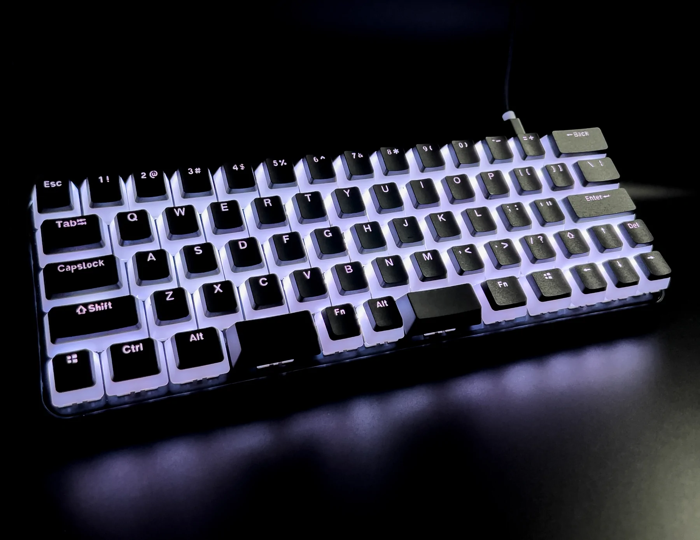

One of the things I keep trying to do is improve the speed with which I can transfer words or commands from my brain into the computer. Typing is the default interface for this so I’ve tried to find ways to speed this up so I can code and write faster.

I began with learning VIM years ago while working on Linux in the VFX industry. Picking up this editor and the inputs required for it made a lot of my text editing faster and the great thing was that I could make use of it in most of my other IDEs since then, through plugins or native support.
The next step was to speed up typing itself. I initially picked up a Charachorder Lite which allows you to type whole words by jamming all the letters in the word at the same time and letting software figure out which word you meant to type. This “new” way of typing (its similarish to stenography which I’ve always found interesting) was a great reason to also learn a new keyboard layout.
Most people learn and know the standard QWERTY layout, or the AZERTY variant of this, and use it effectively every day. This layout asks you to move your fingers around the keyboard quite a bit and doesn’t really keep your “home row” fingers above letters that get used frequently, which slows down typing and increases the risk of RSI. So I thought why not pick up an alternative layout and use this new keyboard as an excuse to do so in 2023.
I’ve decided to learn Colemak which seems to be better suited to programming than Dvorak (or so I’ve been told). The nice thing about the Charachorder is that it lets me set a layout on the keyboard itself rather than in the OS, so I can transfer the keyboard between computers and not have to touch any settings on the machine. Great for when I need to switch back to my QWERTY keyboard during the early stages of learning so I can remain productive at work.
Anyway we’ll see how this journey goes, but hopefully this combines well with my new goal to write more in 2023.